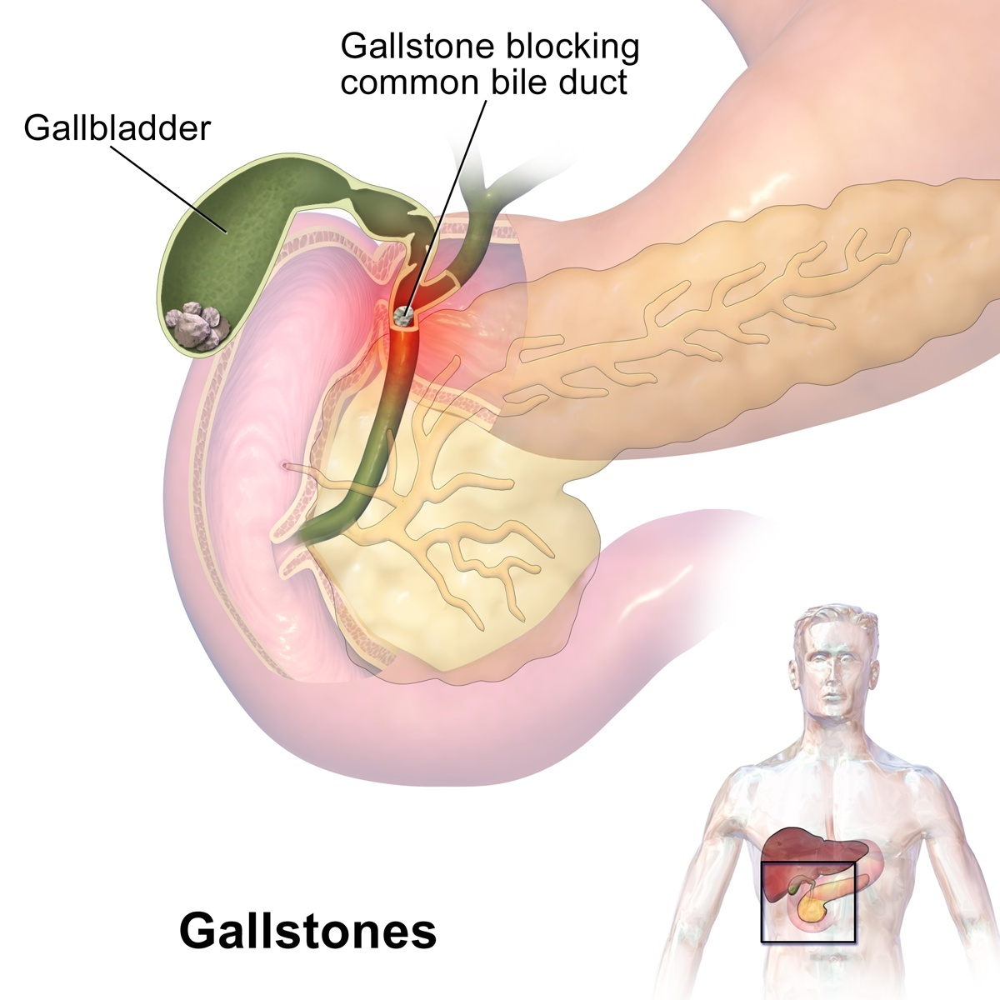
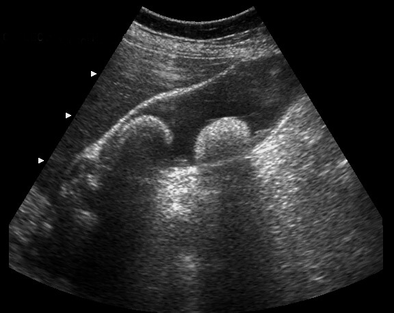

1. Overview: What Are Gallstones?
Gallstones are hardened deposits of digestive fluid that form within your gallbladder. The gallbladder is a small, pear-shaped organ located in the right upper portion of your abdomen, nestled just beneath your liver.
The gallbladder's primary role is to store and concentrate bile—a yellowish digestive liquid synthesized continuously by the liver. When you eat, especially fatty or rich meals, the gallbladder contracts and squirts bile into your small intestine (duodenum) to assist in fat digestion.
Gallstones can range in size from as small as a grain of sand to as large as a golf ball. Some individuals develop just one solitary gallstone, while others develop multiple faceted stones at the same time.

Gallstones (Cholelithiasis): Anatomical overview of the digestive and biliary system showing the liver, gallbladder, and bile ducts, with gallstones accumulated within the gallbladder lumen.
Silent Stones vs. Symptomatic Stones: Gallstones that do not cause symptoms—frequently discovered incidentally during a routine whole-abdomen ultrasound—usually only need clinical observation. However, people who experience recurrent pain or acute complications typically require surgical gallbladder removal.
Can medicines dissolve gallstones?
Oral medications cannot reliably dissolve gallstones or protect against acute complications such as cholecystitis, common bile duct obstruction, or pancreatitis. Once gallstones become symptomatic, minimally invasive surgical removal (laparoscopic cholecystectomy) remains the definitive, standard treatment worldwide.
2. Symptoms
Gallstones may cause no signs or symptoms if they remain quietly inside the gallbladder lumen. However, if a gallstone lodges in the cystic duct outlet and causes a temporary obstruction, symptoms result (a condition known as biliary colic):
Pain Characteristics
- Sudden, rapidly intensifying pain in the upper right portion of your abdomen (right hypochondrium)
- Sudden and rapidly intensifying pain in the center of your abdomen, just below your breastbone (epigastrium)
- Back pain between your shoulder blades (interscapular region)
- Pain radiating to your right shoulder
Associated Digestive Signs
- Pain typically triggered 30 to 60 minutes after eating rich, fatty, or heavy food
- Nausea and vomiting during painful episodes
- Post-meal bloating, indigestion (dyspepsia), and feeling uncomfortably full
- Episodes commonly last from several minutes up to a few hours before subsiding
3. When to See a Doctor
Schedule an appointment with a surgical gastroenterologist if you experience recurrent indigestion, right upper quadrant pain, or discomfort after fatty meals.
Seek Immediate Emergency Care If You Develop:
- Severe abdominal pain: Pain so intense that you cannot sit still, lie comfortably, or find relief in any position.
- Jaundice: Yellowing of your skin and the whites of your eyes, often accompanied by dark tea-colored urine and clay-colored stools (indicating a stone obstructing the main bile duct).
- High fever with chills: Indicates acute inflammation or bacterial infection in the gallbladder (acute cholecystitis) or bile ducts (cholangitis).
4. Causes & Types of Gallstones
Doctors understand that gallstones develop when there is a biochemical imbalance in the composition of bile. Gallstones may result when:
- Your bile contains too much cholesterol: Normally, bile contains enough bile salts and lecithin to dissolve the cholesterol excreted by your liver. But if your liver excretes more cholesterol than your bile can dissolve, the excess precipitates into microscopic crystals, which eventually coalesce into stones.
- Your bile contains too much bilirubin: Bilirubin is a chemical produced when your body breaks down red blood cells. Certain medical conditions cause your liver to produce excessive bilirubin—such as liver cirrhosis, biliary tract infections, and certain hereditary blood disorders.
- Your gallbladder doesn't empty properly: If your gallbladder contracts sluggishly or empties incompletely, stagnant bile becomes overly concentrated, accelerating stone formation.
Types of Gallstones
Cholesterol Gallstones (~75% to 80%)
The most common type of gallstone. Usually yellow-green in color, composed predominantly of hardened cholesterol that precipitated out of bile.
Pigment Gallstones (~20% to 25%)
Dark brown or jet-black stones formed when bile contains excessive bilirubin and calcium salts, often associated with biliary infections or hemolytic blood conditions.
5. Potential Complications
When symptomatic gallstones are left untreated, they can lead to serious secondary health conditions:
- Inflammation of the Gallbladder (Acute Cholecystitis): A gallstone that becomes firmly impacted in the neck of the gallbladder can cause intense bacterial inflammation, severe continuous pain, fever, and leukocytosis.
- Blockage of the Common Bile Duct (Choledocholithiasis / Cholangitis): Gallstones can slip out of the gallbladder into the main bile duct (CBD), obstructing bile flow from the liver to the intestine. This triggers severe pain, obstructive jaundice, and potentially life-threatening bacterial infection of the bile ducts (cholangitis).
- Blockage of the Pancreatic Duct (Gallstone Pancreatitis): The pancreatic duct and common bile duct share a common channel just before entering the small intestine. A passing or impacted stone can block pancreatic drainage, triggering sudden, acute inflammation of the pancreas with severe unrelenting abdominal pain radiating to the back.
- Gallbladder Cancer: While rare, individuals with a long-standing history of gallstones (especially large stones over 3 cm or calcified porcelain gallbladders) have a slight statistical increase in baseline risk.
6. How We Investigate (Diagnostic Evaluation)
A systematic, focused sequence of tests allows accurate evaluation while avoiding unnecessary procedures:
- 1. Ultrasound of the Whole Abdomen (USG): The frontline gold-standard investigation. It is safe, non-invasive, radiation-free, and highly accurate. It identifies stone number, dimensions, gallbladder wall thickness (signs of acute edema), and measures the caliber of the Common Bile Duct (CBD).
- 2. Liver Function Tests (LFT): Routine blood tests measuring total and direct bilirubin, SGOT, SGPT, and alkaline phosphatase. Elevated values alert your surgeon to bile duct irritation or stones.
- 3. MRCP (Magnetic Resonance Cholangiopancreatography): A specialized, non-invasive MRI of the biliary and pancreatic tree. It is requested if the ultrasound reveals a dilated bile duct or if liver enzymes are elevated, ensuring no undetected stone resides in the main bile duct prior to surgery.

Clinical Abdominal Ultrasound (USG): Diagnostic sonogram demonstrating a bright hyperechoic gallstone casting characteristic posterior acoustic shadowing (dark band behind the stone) inside the fluid-filled gallbladder lumen.
7. Treatment & Laparoscopic Keyhole Surgery
When surgery is recommended, Laparoscopic Cholecystectomy is the worldwide standard of care. Rather than making a traditional 15 cm painful muscle-cutting subcostal incision, your surgeon operates through 4 tiny keyhole incisions (each 5mm to 10mm in size) using high-definition optical magnification and precision micro-instruments.
8. Life & Digestion After Gallbladder Removal
A very common patient question is: "How will my body digest food without a gallbladder?"
Your liver produces bile, not your gallbladder. The gallbladder is strictly a storage pouch; it does not manufacture bile. Following surgery, the liver continues to synthesize bile as normal, which now flows in a steady, gentle trickle directly into your small intestine to facilitate digestion whenever you eat.
How does digestion adapt over the long term?
Most patients adapt smoothly with completely preserved digestion. Because the liver continues producing bile uninterrupted, food is digested normally. During the initial few weeks, as the digestive tract adjusts to continuous biliary flow, a small minority of individuals may experience slightly softer stools or mild gas after particularly heavy or oily meals. These transient symptoms typically settle as the intestines adapt. Most patients comfortably return to a balanced, routine home-cooked diet within several weeks without requiring permanent dietary restrictions or digestive enzyme tablets.
Have Questions About Your Gallbladder Report?
Connect with the Gut & Gynae clinic desk to review your ultrasound reports at GMC Nagpur and determine whether keyhole surgery or conservative observation is recommended.